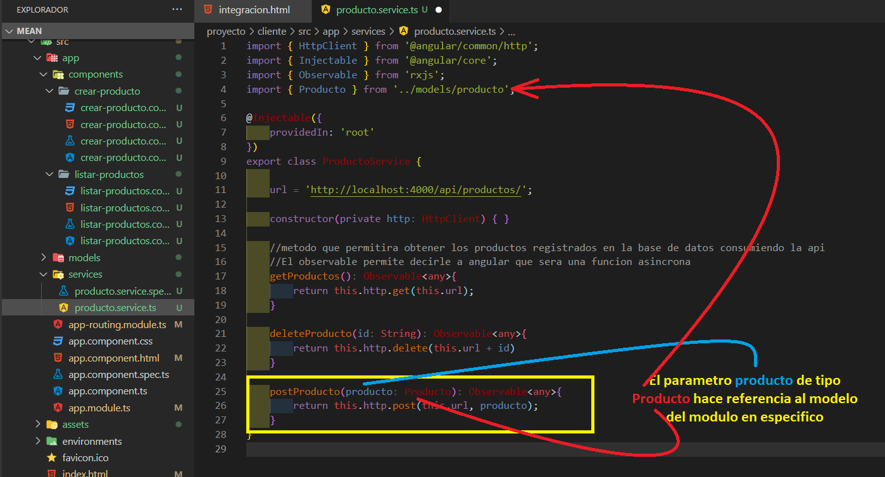
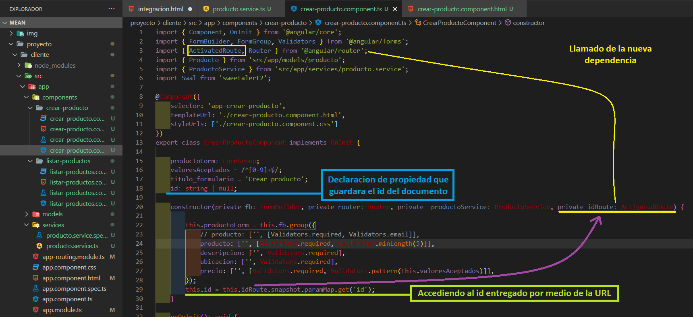

Integracion servicio express con angular
-
(FRONT) Importar en app.module.ts la libreria de http
-
(FRONT) Creacion de metodos en el servicio del modulo services/producto.service.ts
-
Este paso dara un error de CORS - se soluciona en el siguiente paso
(FRONT) Llamado del metodo creado en servicio para obtener los productos en el ts ( listar-productos.component.ts ) del componente encargado
-
Solucion del error de CORS
(BACK) En el proyecto instalar una nueva dependencianpm i cors -
(BACK) En index.js importar la dependencia de CORS e indicarle que dejara la comunicacion entre servicios

-
(FRONT) Realizar la prueba cargando el modulo correspondiente
-
(FRONT) En listar-productos.componet.ts generar un nuevo atributo de clase de tipo producto donde se guardara la data recibida del back
-
(FRONT) En listar-productos.component.html realizar la iteracion para mostrar la data en pantalla
Tener en cuenta que en este se ejecutara el sweetalert
-
(FRONT) Crear el metodo en el servicio ( producto.service.ts ) teniendo en cuenta que se debera de importar el modelo del modulo para guardar la respectiva informacion mas adelante
 -
(FRONT) Llamar el servicio en crear-producto.component.ts dentro del contructor para poder usar los metodos importando el servicio como tal
-
(FRONT) Modificar el metodo para guardar la informacion donde se le agregara el servicio para hacer el respectivo llamado a la api
-
(FRONT) Realizar la respectiva prueba del guardado de la data
-
(FRONT) Generar el metodo en el servicio producto.service.ts que se encargara de obtener el dato especifico
-
(FRONT) Agregar al boton de editar listar-productos.component.html la ruta con el respectivo id del dato teniendo en cuenta el path declarado en app-routing.module.ts
-
(FRONT) Hacer la prueba
-
(FRONT) Crear una variable en crear-producto.component.ts que controlara el titulo del formulario de manera dinamica segun la accion a realizar
-
(FRONT) Dirigirse a crear-producto.component.html para cambiar el titulo estatico a dinamico
-
(FRONT) Importar modulo
ActivatedRouteen crear-producto.component.ts y declarar un nuevo atributo llamadoidque accedera al id de la ruta
 -
(FRONT) Generar un nuevo metodo en crear-producto.component.ts que se encargue de evaluar la accion que es requerida por el usuario editar o crear
-
(FRONT) Llamar el metodo
accionSolicitadadentro delngOnInitpara evaluar la accion solicitada
-
(FRONT) Hacer la respectiva prueba
-
(FRONT) Crear el metodo encargado de editar el producto en producto.service.ts
-
(FRONT) Hacer el respectivo condicional que identificara el proceso que se llevara a cabo